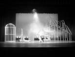
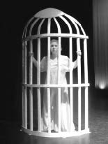
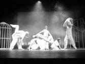

Dance has the power to manifest the unconscious visibly through the physical shapes the dancers make and the movement patterns that they trace through space. The imagery that the dance stirs up in the mind’s eye engages the audience’s imagination. “Dreams never lie,’” C.G. Jung assures us. Gabrielle Roth asserts, “The body never lies.” Therefore, a dream dance has the potential to express a very primal truth.
I teach dance at a small, private liberal arts college where I am Artistic Director of the Berry College Dance Troupe. We present an annual dance concert for which I develop original dances. For the 2002 concert entitled, ‘Wishes, Lies, and Dreams,’ I created a dream dance as a way of working with the dream material that was bubbling up to consciousness for me.
For years, I have recorded every dream that awakened me from sleep. These dreams were often intensely gripping nightmares that demanded my immediate attention. I have also done stream-of-consciousness journaling in which much of my dream material arises.
When Last I Dreamed
When I began working on this dream dance, my students found this way of honoring dreams fascinating. I brought in passages from Jung and John Sanford to give them a deeper perspective on how I was transforming the dreams into choreography. Before I began teaching a dance phrase, I would read the dream to them that we were about to enact. I wanted the dancers to understand the motivation behind the movement. Sometimes the dream would speak to one of the dancers personally and he/she would literally jump at the chance to portray the protagonist.
‘When Last I Dreamed’ provided the opportunity to embody my dreams. It recreated the visions I had seen in my sleep. Although I did a great deal of research into dream symbolism, my goal was to delve into the feeling state that came up in the dream, rather than analyzing the meaning of the dream. I also explored active imagination as a way of finishing a dream or to further develop dream material.
Opening

‘When Last I Dreamed’ opened in relative stillness. The audience was invited into the dreamscape, which included the outline of a two-story Tudor style home with twin dormers, a huge birdcage, and a pedestal. The two male dancers and six female dancers were costumed in fluid silk pants and short-sleeved shirts in pale tones, reminiscent of pajamas.
Angels
The first dream sequence re-enacted Jacob’s classic dream from the Old Testament, wherein a ladder connecting heaven and earth appeared, with angels flowing up and down the rungs. In this angelic dance, the female dancers entered sequentially and began turning. The Dervish-like spinning invoked a sense of relinquishing control, of surrendering to the Divine. Next, pairs and single dancers ‘took flight,’ in the form of running leaps, as well as male-assisted lifts. So, the opening dream sequence created a sense of Divine presence in the dream dance.
Man with a Gun
The next section of the dance depicted scenes from nightmares. My first disturbing dream reported:
I am at the home of my childhood, even though I am a young mother. I am facing our green front door, surrounded by ivy wallpaper. I can see a man that I recognize on the other side of the door, a man with whom I was once very much in love. Now, however, the sight of this man holding a gun outside my front door is extremely threatening. I panic as I realize that my parents have never locked their doors, in fact, none of their doors or windows lock. I feel extremely vulnerable. My heart is pounding. I know that there is no way of keeping this man at bay. Somehow, I muster the courage to shove the front door open and he falls into an abyss with his gun falling after him.
This dark dream unfolded as a dance phrase in which a young woman seemed to be panicking and running from room to room inside the Tudor house. A large man with a gun crept up to the house and paced back and forth in front of the window. He peered inside at her. The female recognized him, but only responded to him as a threat to her security. The tension mounted, as harsh music grew more intense, until she finally fainted and he ran off stage.
Two Women
The second section of the dark dreams involved two female dancers who performed a frantic dance to discordant music. Their movements were harsh, angular, and staccato. Their arm gestures slashed out into space. They fell to the floor. Their bodies exploded open. They contracted violently closed. It was a dance of possession. It brought up images of the medieval Tarantella, in which women reportedly danced out of control until they passed out or died.
Falling
After we had been building the dance for several weeks, I asked all the dancers, “What dreams do you have that we are not portraying?” “Falling dreams!” was the resounding response. So, we immediately began to recreate their dream experiences. Three of the tiniest dancers agreed to be the fallers. They each mounted the pedestal and one after another fell backwards into the arms of the other dancers, who then eased each to the floor. This added interest to the dance and the collaboration gave everyone a sense of ownership in the creative process. Then our 6’ 6” former collegiate baseball player shared his idea: “I always dream that I’m falling face first. I’d like to try doing that.” Everyone froze! He outweighed most of our dancers by over one hundred pounds! Still, everyone agreed to let him have his turn falling, very aware of how much force would have to be absorbed to keep him safe. When it was his turn, he didn’t just fall passively into their arms; he sprung off the pedestal like he was diving into a swimming pool! The studio echoed with the slapping sound of twelve hands breaking his fall. Although it was a very stressful scene, it stayed in the choreography. Every run of the show, his fall brought gasps, as members of the audience revisited their worst falling dreams.
Birdcage

The next dreamscape involved a human-sized Victorian birdcage. This metaphor grew out of dream imagery in which I reported:
I feel like I’m suffocating, gasping for air or caged as a wild animal, having always known sweet freedom. In other dream imagery a beautiful bird often appeared in a gilded cage.
My research suggested that birds often symbolize the soul, as a creature of both the earth and the sky. The image of a cage suggested the restriction of an instinctive aspect of the self. A caged bird reportedly served as a metaphor for frustrated spiritual ambitions.
To depict the essence of the caged bird, a stark white light illuminated the cage. A single female dancer gripped the bars with both hands and peered out. As the dissident music built to a climax, she kicked and swung her legs about the limited space, but froze all activity to watch another female dancer ‘fly’ past the cage as two men lifted her.
The Dream Lover’s Dance
The caged dancer remained confined, as four other female dancers joined her on stage, along with a tall male. The man relaxed on the pedestal and watched as his Anima or dream lover dance unfolded. The four women on stage moved sensuously, with gestures that communicated longing and desire. The caged dancer joined their dance in her confined space; her arms reached out of the bars, beseechingly. When this dream concluded, all of the characters exited the stage, including she who had been contained in the birdcage.
Snake Goddess
The snake dance grew out of a specific dream I had:
‘There are snakes everywhere, venomous snakes. I witness this scene, but do not physically interact. My beautiful middle daughter and her father are rallying these snakes into the center of the space between the two of them. In pairs, the snakes merge and wrap around each other and rise upward. However, they begin devouring one another instead. As the energy changes, the young woman becomes less cautious in the way she is handling the snakes. Just as she drops two snakes on the ground and they escape between her feet and legs, I speak. “Do not allow those snakes to run between your legs. They could bite your ankle or slide up your leg.” Just then, she grips another snake close to the tail and lifts it toward herself. The snake slings itself against her torso and ascends her body, biting her neck as it slides under her hair. ”I am bitten,” she announces simply, releasing her grasp on the snake.’
There were many ways to work with this dream. I chose to focus on the transformative symbol of the snake, with its ability to shed its skin and start life anew in another manifestation. I was also aware of the medical symbol inherent in the entwined rising snakes as I continued my research. Death in dreams reportedly symbolized another form of transformation, from one life experience to the next. So, I worked with this dream dance phrase by focusing all the transformative energy on the central female. She undergoes metamorphosis into the Snake Goddess of early Cretan culture.
As I recreated the snake dream, I opened the scene with a beautiful young woman dancing into center stage with a 6-foot snake wrapped around her shoulders like a shawl. Her undulating solo portrayed snake-like sensuality. She commanded the stage with her powerful presence and took on the persona of the Snake Goddess. Then, pairs of women entered from opposite sides of the stage, each with a snake held between her hands. After encircling the Snake Goddess, each draped her snake on the outstretched arms of the Goddess and exited, as another pair of dancers entered holding their snakes. This continued until the Snake Goddess was laden with snakes undulating all over her upper torso. At this point, two men advanced toward her, presenting a throne upon which she sat, balancing all of her snakes, and they carried her offstage.
Ending

‘When Last I Danced’ concluded by revisiting the still point imagery with which it began. Dancers were joined in pairs and trios, mirroring one another or mutually supporting the other in shapes that challenged their balance and level of trust. Each image that emerged out of their bodies blending and entwining offered a gateway to the audience’s own fantasies, with a final group sculpture depicting diversity within wholeness.
Conclusion
This choreography was my creative response to delving into the realm of my own dreams, knowing that there was nowhere to hide. ‘When Last I Dreamed’ evolved in collaboration with my student dancers. Without their willingness to take dreams seriously, I could never have taken the risks involved in telling the world what I least understand about myself!
All photographs submitted for this article are of the Berry College Dance Troupe, for which Jeanne Schul Elkins is Artistic Director. Cover & article photos were taken by Chris Love, a middle grades math and science teacher at the Berry College Middle School. He enjoys amateur photography and digital artistry. His wife and daughter are a constant supporter of his dreams and aspirations.